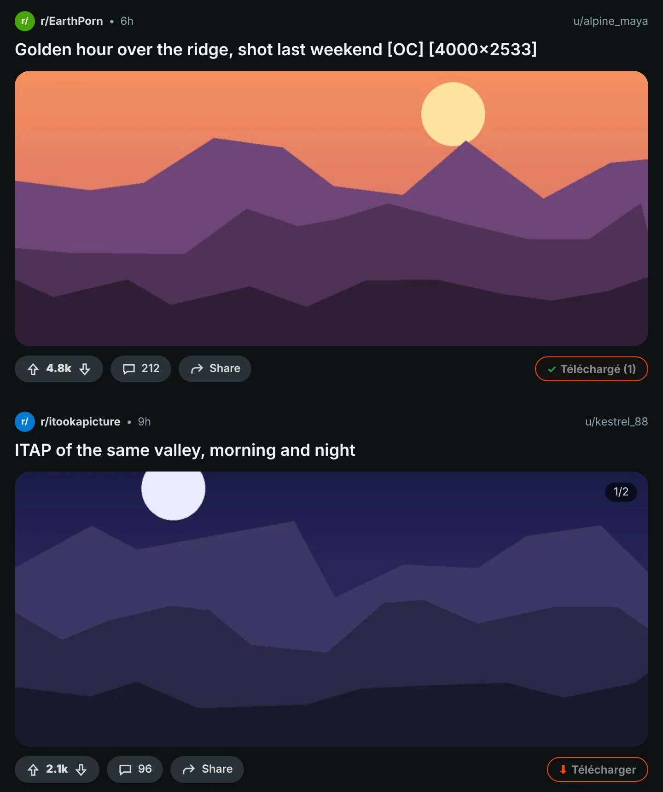
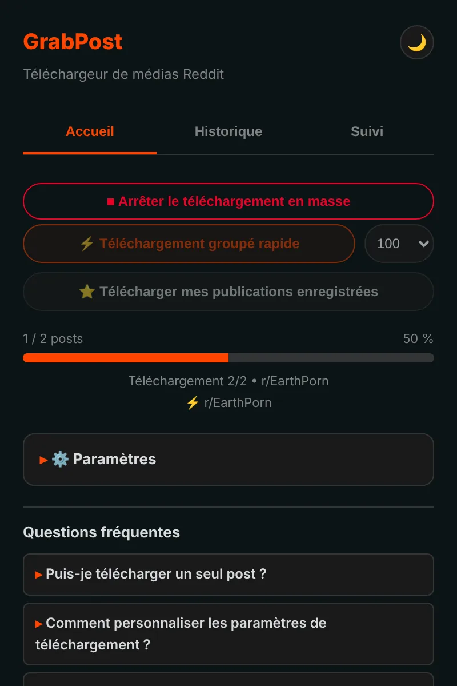
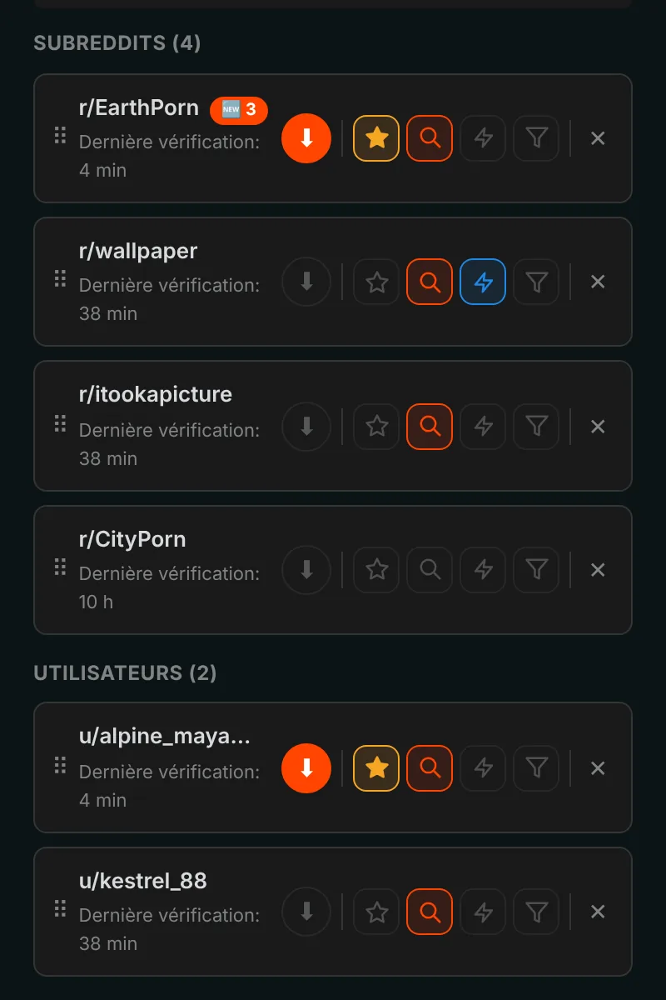
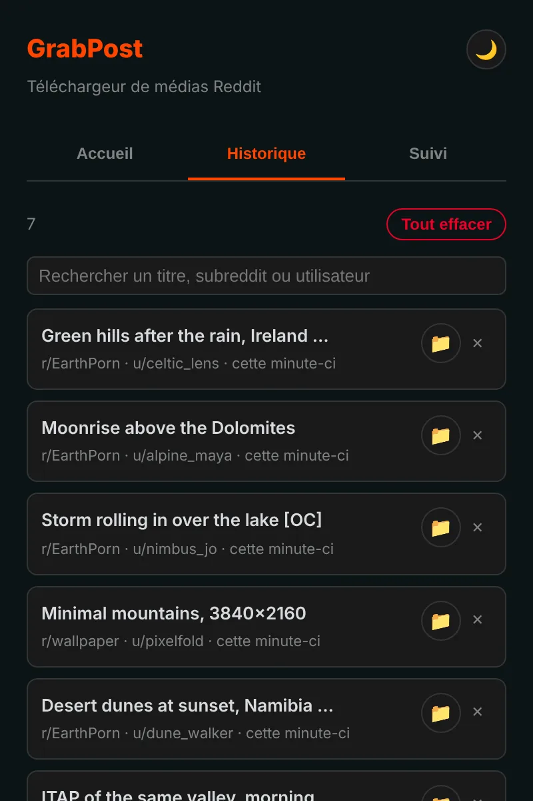

Gardez tout ce que vous voulez de Reddit, en un clic.
GrabPost ajoute un bouton Télécharger sous chaque publication Reddit. Les vidéos gardent leur son, les galeries arrivent complètes, et des subreddits ou profils entiers se téléchargent pendant que vous faites autre chose. Gratuit et sans pistage.
Pas encore dans les boutiques. L'installation depuis GitHub prend environ une minute.

Appuyez sur le bouton de la publication.
Un bouton sur chaque publication
Le bouton orange se place dans la ligne vote et partage de chaque publication : dans le fil, les profils et les résultats de recherche, sur le nouveau comme sur l'ancien Reddit. Images, galeries, GIF, Redgifs et liens Imgur fonctionnent. Alt+Maj+D télécharge la publication au centre de l'écran.

Des pages entières d'un coup
Le mode rapide lit un subreddit, un profil, un multireddit ou une recherche directement dans les données de Reddit, sans avoir à faire défiler. Il saute ce que vous avez déjà et s'arrête aux publications déjà téléchargées. Vos publications enregistrées se téléchargent de la même façon.

Suivez, les nouvelles publications viennent à vous
Suivez des subreddits et des utilisateurs, recevez une notification quand un nouveau média arrive, ou laissez-le se télécharger tout seul. Filtrez par type de média, NSFW ou mots-clés. Jusqu'à 10 favoris peuvent être vérifiés toutes les 5 minutes.

Chaque téléchargement est mémorisé
L'historique liste ce que vous avez enregistré, avec une recherche, et les publications que vous avez déjà sont marquées sur Reddit. Des sauvegardes sont faites automatiquement, une réinstallation n'efface pas votre liste.

Les détails sont réglés
Vidéos avec le son
Reddit range le son dans un fichier à part. GrabPost le trouve et l'assemble, directement dans votre navigateur.
Vos dossiers, vos noms de fichiers
Des modèles comme {subreddit}/{user} pour les dossiers et {date}_{title} pour les fichiers.
Pas de doublons
Reconnaît la même image même si quelqu'un l'a republiée dans un autre subreddit.
Fonctionne à côté d'IDM
Les gestionnaires de téléchargement ne peuvent pas récupérer le fichier et jeter vos noms de dossiers.
Patient avec Reddit
Quand Reddit demande une pause, GrabPost attend exactement le temps demandé puis reprend.
15 langues
L'extension et cette page parlent votre langue.
Ce que vous téléchargez ne regarde que vous
- Pas d'analyse, pas de pistage, pas de compte
- Ne parle qu'à Reddit et aux sites qui hébergent ses médias
- Votre historique et vos réglages restent dans votre navigateur
- Open source sur GitHub
Installé en une minute
GrabPost n'est pas encore sur le Chrome Web Store, il s'installe donc à la main. Il fonctionne dans Chrome, Edge, Brave, Opera et les autres navigateurs Chromium.
- Téléchargez le dernier grabpost-v…zip sur GitHub et décompressez-le dans un dossier que vous garderez.
- Ouvrez
chrome://extensionset activez le Mode développeur en haut à droite. - Cliquez sur Charger l'extension non empaquetée et choisissez le dossier grabpost décompressé.
- Ouvrez Reddit. Le bouton orange apparaît sur les publications, et l'icône de la barre d'outils ouvre le panneau GrabPost.
Pour mettre à jour, remplacez les fichiers dans le même dossier et cliquez sur le bouton de rechargement de la carte GrabPost. Vos réglages et votre historique restent.
Firefox : la version pour le magasin de modules arrive. En attendant, le zip Firefox peut être chargé temporairement depuis about:debugging.
Questions
GrabPost est-il gratuit ?
Oui, toutes les fonctions sont gratuites. S'il vous fait gagner du temps, vous pouvez offrir un café au développeur.
Où vont les fichiers ?
Dans le dossier de téléchargement de votre navigateur, dans un sous-dossier de votre choix. Par défaut c'est Reddit Downloads, et les noms de fichiers commencent par le nom du subreddit.
Faut-il être connecté à Reddit ?
Seulement pour vos publications enregistrées et les communautés à accès restreint par l'âge. Tout le reste fonctionne sans compte.
Vais-je perdre mon historique si je réinstalle ?
Non. Avec la synchronisation du navigateur activée, les réglages et la liste suivie reviennent tout seuls. Un fichier de sauvegarde est aussi enregistré automatiquement, et GrabPost peut reconstruire son historique à partir de la liste des téléchargements du navigateur.
Ça fonctionne dans Edge, Brave ou Opera ?
Oui. Tout navigateur Chromium capable de charger une extension non empaquetée fonctionne avec le zip Chrome.
Télécharger GrabPost
Pas encore dans les boutiques. L'installation depuis GitHub prend environ une minute.